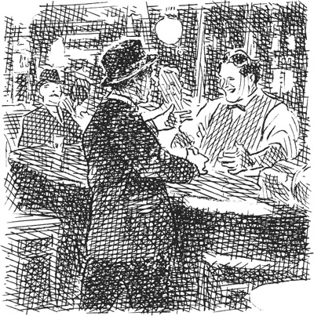

1
Listen to Part 1:

KẺ ĂN CẮP ĐỒNG NỔI TIẾNG
Chuyện xảy ra ở Bắc Mỹ. Vào năm 1900.
Jimmy Valentine đang ở trong tù. Anh là Tù nhân số 9762. Jimmy đã ở tù 9 tháng. Anh ta muốn ra tù và bạn bè đang cố giúp anh. Bạn anh đã nói chuyện với những người có thế lực về anh.
Một hôm, Jimmy đang đóng giày trong xưởng của trại giam. Một người lính canh bước vào phòng.
‘Cai ngục muốn gặp ông, 9762’, người lính canh nói. Ông ta dẫn Jimmy đến phòng quản ngục.
‘Valentine, anh thật là may mắn!’ cai ngục nói. ‘Anh có những người bạn có thế lực. Chính phủ đã ân xá cho anh. Ngày mai, anh sẽ được tự do. Hãy lắng nghe tôi, Valentine. Anh không phải là một kẻ trẻ tồi tệ. Đừng quay lại nhà tù này! Anh có thể thay đổi cuộc đời. Anh phải sống trung thực. Anh không được lấy thêm tiền nữa. Hãy dừng hành vi trộm cắp! Dừng hành vi phá két sắt!’
‘Tôi không phải là kẻ phá két sắt, thưa ngài!’ Jimmy nói. ‘Tôi chưa từng phá két sắt lần nào trong đời!’
Cai ngục cười. ‘Ai đã phá két sắt ở Springfield?’ ông ta hỏi. ‘Chẳng phải anh đã làm việc đó sao?’
‘Springfield?’ Jimmy trả lời. ‘Tôi chưa từng ở đó lần nào trong đời!’
Listen to Part 2:
‘Dẫn anh ta đi’, cai ngục nói với người lính canh. ‘Đưa anh ta đến đây lúc bảy giờ sáng ngày mai.’
_____
Sáng sớm hôm sau, Jimmy lại đứng trong phòng quản ngục. Một viên chức nhà tù trao cho anh một tấm vé tàu và năm đô la. Cai ngục bắt tay Jimmy. Sau đó, Tù nhân số 9762 trở thành Ông James Valentine. Anh ta bước ra khỏi trại giam, ra ngoài nắng.
Ngoài trại giam, tiếng chim hót. Nhưng Jimmy không nghe thấy tiếng chim. Anh ta đến nhà hàng và gọi một bữa ăn ngon – một con gà và một chai rượu. Sau đó, anh lên tàu hỏa.
_____
Ba giờ sau, Jimmy xuống tàu tại một thị trấn nhỏ ở Illinois. Anh bước vào một quán bar nhỏ và bắt tay chủ quán.
‘Mike Dolan!’ Jimmy nói. ‘Ông khỏe chứ?’

‘Tôi rất tiếc, Jimmy!’ Mike nói. ‘Chúng tôi đã cố gắng đưa anh ra khỏi tù sớm hơn. Nhưng cảnh sát Springfield đã gây rắc rối cho chúng tôi. Đây là chìa khóa phòng anh.’
Mike đưa cho anh ta một chiếc chìa khóa và Jimmy lên phòng của mình. Anh ta mở khóa cửa và bước vào trong. Không có gì trong phòng thay đổi. Không có ai ở trong phòng trong chín tháng qua.
Listen to Part 3:
Cảnh sát đã bắt giữ Jimmy trong phòng này. Jimmy đã đánh nhau với họ và một trong những chiếc cúc áo sơ mi của Ben Price đã bị rơi trong lúc ẩu đả. Chiếc cúc áo của vị thám tử vĩ đại vẫn còn nằm trên sàn phòng.
Jimmy Valentine cười. Sau đó, anh ta kéo một chiếc vali phủ bụi ra từ sau giường. Anh cẩn thận mở vali. Bên trong vali là bộ dụng cụ trộm cắp tốt nhất ở Hoa Kỳ. Jimmy đã trả 900 đô la cho chúng! Anh ta đã tự làm một số dụng cụ.
Nửa giờ sau, Jimmy lại đi xuống lầu. Anh ta mặc quần áo sang trọng và vali của anh đã sạch và sáng bóng.
‘Anh sắp đi ăn cắp nữa phải không?’ Mike hỏi.
‘Tôi ư?’ Jimmy nói. ‘Ăn cắp? Tôi không hiểu ý ông, Mike. Tôi bán bánh quy. Tôi là nhân viên bán hàng của Công ty New York Cracker!’
Jimmy cười. Mike cũng cười.
_____
Một tuần sau, có một vụ trộm ở Richmond, Indiana. Tên trộm đã lấy 800 đô la từ một chiếc két sắt cũ. Hai tuần sau đó, ai đó đã ăn cắp 1500 đô la từ một chiếc két sắt mới ở Logansport, Indiana. Sau đó, 5000 đô la đã biến mất từ một chiếc két sắt trong một ngân hàng ở Jefferson City, Missouri.
Ben Price đã điều tra ba vụ trộm này.
Listen to Part 4:
‘Jimmy Valentine lại hành động rồi!’ anh ta nói.
Ben Price biết mọi chuyện về Jimmy Valentine. Jimmy làm việc một mình. Và anh ta đi nhiều dặm giữa các công việc. Jimmy di chuyển nhanh chóng. Và anh ta thích quần áo đẹp, đồ ăn ngon và rượu ngon.
‘Tôi sẽ bắt hắn’, thám tử tự nhủ. ‘Và lần sau, hắn sẽ ở lại tù. Lần sau, sẽ không có lệnh ân xá của chính phủ cho hắn đâu.’
_____
Một buổi chiều, Jimmy và chiếc vali của anh ta đến thị trấn nhỏ Elmore. Elmore ở Arkansas. Thị trấn cách nhà ga gần nhất năm dặm.
Jimmy đi dọc theo phố chính của Elmore. Anh ta còn trẻ. Anh ta đẹp trai. Anh ta mặc quần áo đẹp. Không nhiều người đàn ông trẻ ở Elmore đẹp trai như Jimmy Valentine.
Một cô gái trẻ xinh đẹp đi về phía anh ta trên đường. Jimmy Valentine nhìn vào mắt cô - và anh ta đã yêu. Gò má của cô gái trẻ đỏ bừng. Cô đi ngang qua anh ta. Jimmy quay lại và thấy cô đi vào Ngân hàng Elmore.
Một cậu bé đang chơi trên đường bên ngoài ngân hàng. Jimmy đưa cho cậu bé một đồng xu và hỏi cậu một số câu hỏi về thị trấn. Sau vài phút, cô gái trẻ bước ra khỏi ngân hàng.
Jimmy đưa cho cậu bé một đồng xu khác. ‘Cô gái trẻ đó là ai vậy?’ anh ta hỏi.
Listen to Part 5:
‘Cô ấy là Annabel Adams’, cậu bé trả lời. ‘Cha cô ấy là chủ ngân hàng.’
Jimmy đi đến Khách sạn Planters và xin một phòng.
‘Tôi tên là Ralph D. Spencer’, anh ta nói với nhân viên khách sạn. ‘Tôi muốn mở một doanh nghiệp ở đây. Có cửa hàng giày nào ở Elmore không?’
‘Không, ở đây không có cửa hàng giày’, nhân viên trả lời. ‘Thị trấn này cần một cửa hàng giày. Ông sẽ thích Elmore, ông Spencer. Mọi người ở đây rất thân thiện.’
‘Tôi sẽ ở lại đây vài ngày’, Jimmy nói. ‘Tôi sẽ đi dạo quanh thị trấn.’
‘Ông có muốn ai đó mang vali của ông lên lầu không?’ nhân viên hỏi.
‘Không, tôi sẽ tự mang’, Jimmy trả lời. ‘Nó rất nặng.’
_____
‘Ông Ralph Spencer’ ở lại Elmore. Chẳng mấy chốc, anh ta sở hữu một cửa hàng giày nhỏ trong thị trấn. Cửa hàng rất thành công. Mọi người thích ông Spencer và họ tôn trọng ông ta. Ông đã kết bạn với rất nhiều người. Và chẳng bao lâu sau, anh gặp Annabel Adams.
Cuối năm, Ralph D. Spencer và Annabel Adams đã đính hôn.
Listen to Part 6:
Annabel yêu Ralph Spencer và cô tự hào về anh. Và cha cô, chủ ngân hàng Elmore, cũng rất thích Ralph. Gia đình Adams thường mời anh ta đến nhà.
_____
Một hôm, hai tuần trước ngày cưới, Jimmy đang ngồi trong phòng của mình tại Khách sạn Planters. Anh ta suy nghĩ một lúc, rồi viết một lá thư. Đó là thư gửi cho một người bạn ở St Louis, Missouri.
_____
Thứ Hai sau đó, Ben Price đến Elmore. Thám tử nói chuyện với nhiều người.
Anh ta hỏi họ về Jimmy Valentine. Không ai trong thị trấn biết Jimmy Valentine. Nhưng mọi người đều nói về Ralph D. Spencer.
Chẳng mấy chốc, Ben Price bắt đầu theo dõi chủ cửa hàng giày.
‘Jimmy! Anh định cưới con gái của chủ ngân hàng’, thám tử tự nhủ. ‘Thật thú vị!’

Listen to Part 7:
_____
Sáng thứ Ba, Jimmy ăn sáng tại nhà của chủ ngân hàng, bên ngoài thị trấn.
‘Tôi sẽ đến Little Rock hôm nay’, anh ta nói với gia đình. ‘Tôi muốn mua bộ đồ cưới. Và tôi muốn mua một thứ gì đó đẹp cho Annabel.’
‘Tôi muốn con xem thứ này ở ngân hàng trước’, ông Adams nói.
Sau bữa sáng, tất cả họ cùng nhau đi bộ vào thị trấn - ông Adams, Jimmy, Annabel và em gái Annabel cùng hai cô con gái nhỏ của cô em gái. Họ dừng lại ở Khách sạn Planters và Jimmy lấy vali của anh ta từ phòng. Sau đó, tất cả họ cùng đi về phía ngân hàng.
Bên trong ngân hàng, Jimmy đặt vali xuống. Annabel cố nhấc nó lên. Cô cười.
‘Ralph, cái vali của bạn nặng quá!’ cô nói.
‘Vâng, cô yêu ạ’, Jimmy trả lời. ‘Có rất nhiều đôi giày nặng trong đó.’
Ông Adams đưa gia đình mình và Jimmy đi vào phía sau những hàng rào cao, vào phòng ngân hàng.
Ngân hàng Elmore có một phòng kho tiền mới chắc chắn. Ông Adams rất tự hào về nó. Ông muốn cho gia đình và người bạn Ralph Spencer xem phòng kho tiền mới.
Listen to Part 8:
‘Một số người từ một công ty ở Little Rock đã xây dựng nó’, ông Adams nói. ‘Họ hoàn thành nó vào hôm qua.’
Phòng kho tiền có một cánh cửa thép rất dày. Có một ổ khóa đặc biệt trên cánh cửa - ổ khóa kết hợp. Ông chủ ngân hàng đã giải thích về ổ khóa cho bạn mình.
‘Đây là ổ khóa kết hợp’, ông ta nói. ‘Không có chìa khóa. Những con số trên bốn núm này sẽ mở khóa cửa. Nhưng chúng ta không được đóng cửa. Tôi chưa chọn số cho ổ khóa kết hợp.’
Mọi người đều quan tâm đến phòng kho tiền. Hai cô con gái nhỏ, May và Agatha, rất thích cánh cửa kim loại sáng bóng. Họ thích tay nắm lớn, sáng bóng. Và họ thích những núm có số trên đó.
_____
Ben Price đã thấy gia đình chủ ngân hàng cùng Jimmy vào ngân hàng. Sau vài phút, vị thám tử vĩ đại đi theo họ vào tòa nhà.
Ben Price nhìn qua hàng rào, vào phòng ngân hàng.
‘Chào buổi sáng, thưa ông’, một trong những nhân viên ngân hàng nói với ông. ‘Ông cần giúp gì không?’
Listen to Part 9:
‘Không, cảm ơn cô’, thám tử nói. ‘Tôi đang đợi một người. Tôi sẽ gặp một người bạn ở đây.’
Phía sau hàng rào, Annabel và em gái cô đột nhiên hét lên. May, con gái lớn của em gái, đã đóng cửa phòng kho tiền. Sau đó, cô bé đã xoay tất cả các núm. Nhưng cô bé kia, Agatha, thì ở bên trong phòng kho tiền!
Ông Adams chạy đến cánh cửa thép. Ông kéo mạnh tay nắm cửa.
‘Tôi không mở được!’ ông hét lên. ‘Không ai chọn số cho ổ khóa!’
‘Ôi, chúng ta sẽ làm gì bây giờ?’ em gái Annabel hỏi.
‘Phòng kho tiền không có nhiều không khí’, ông Adams nói. ‘Tôi phải gọi một người đàn ông từ công ty khóa. Nhưng công ty đó ở Little Rock!’
Mẹ Agatha lại hét lên. ‘Con gái yêu của tôi sẽ chết!’
Khuôn mặt ông Adams tái nhợt. ‘Mọi người hãy bình tĩnh lại’, ông nói. Sau đó, ông hét to qua cánh cửa thép dày.
‘Agatha!’ ông hét lên. ‘Agatha! Hãy lắng nghe bố. Chúng ta sẽ sớm đưa con ra ngoài thôi!’
Đứa trẻ ở một mình trong phòng kho tiền tối tăm. Cháu mới năm tuổi và rất sợ hãi. Gia đình cháu nghe thấy tiếng cháu khóc.
Listen to Part 10:
Jimmy cắm bông hồng vào túi áo khoác. Sau đó, anh ta cởi áo khoác và kéo tay áo sơ mi lên. Và đột nhiên, Ralph D. Spencer, chủ cửa hàng giày, đã trở thành Jimmy Valentine, kẻ phá két sắt!
‘Mọi người phải tránh xa cánh cửa phòng kho tiền’, anh ta nói.
Jimmy nhấc vali của mình lên bàn và mở ra. Nhanh chóng và cẩn thận, anh ta lấy ra những dụng cụ kỳ lạ, sáng bóng. Anh ta hát khe khẽ cho chính mình. Mọi người đều nhìn anh. Không ai nói gì.
Sau vài phút, một trong những dụng cụ đặc biệt của Jimmy đã cắt vào cánh cửa thép. Sau mười phút, anh ta đã cắt được ổ khóa. Và một phút sau, Jimmy kéo mạnh tay nắm cửa và cánh cửa mở ra.
Agatha nhỏ bé ngã vào vòng tay mẹ. Đứa trẻ sợ hãi nhưng không bị thương.
Jimmy Valentine đã phá cánh cửa phòng kho tiền trong vòng chưa đầy mười lăm phút. Đó là công việc nhanh nhất trong cuộc đời của anh ta.
Jimmy mặc áo khoác vào. Anh đi qua phòng ngân hàng, hướng về phía cửa ra vào. Anh nghe thấy giọng nói của một cô gái trẻ phía sau mình.
‘Ralph! Quay lại đi!’
Listen to Part 11:
Nhưng Jimmy không quay lại.
Một người đàn ông to lớn đang đứng trước cửa. Đó là Ben Price.
‘Xin chào, Ben!’ Jimmy nói. ‘Anh đã tìm thấy tôi. Tôi sẽ không chống trả lần này. Bắt tôi đi. Hãy đưa tôi đi. Tôi không quan tâm nữa.’
Ben Price nhìn qua Jimmy. Anh nhìn Annabel. Anh nhìn người mẹ và những đứa con của cô trong phòng ngân hàng. Tất cả bọn họ đều đang khóc lặng lẽ.
‘Anh đã mắc sai lầm, anh... anh Spencer ạ’, thám tử nói. ‘Tôi không hiểu anh.’
Sau đó, vị thám tử vĩ đại quay người và đi ra khỏi ngân hàng.